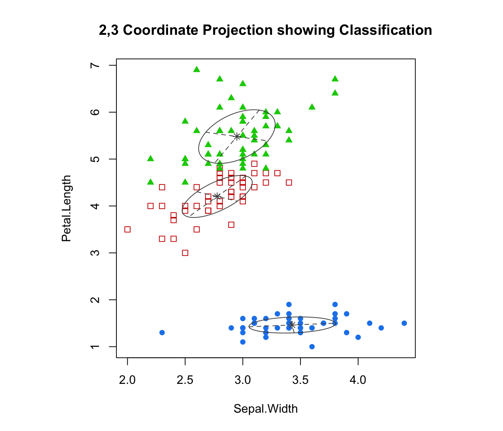

coordProj.RdPlots coordinate projections given multidimensional data and parameters of an MVN mixture model for the data.
coordProj(data, dimens = c(1,2), parameters = NULL, z = NULL,
classification = NULL, truth = NULL, uncertainty = NULL,
what = c("classification", "error", "uncertainty"),
addEllipses = TRUE, fillEllipses = mclust.options("fillEllipses"),
symbols = NULL, colors = NULL, scale = FALSE,
xlim = NULL, ylim = NULL, cex = 1, PCH = ".", main = FALSE, ...)A numeric matrix or data frame of observations. Categorical variables are not allowed. If a matrix or data frame, rows correspond to observations and columns correspond to variables.
A vector of length 2 giving the integer dimensions of the
desired coordinate projections. The default is
c(1,2), in which the first
dimension is plotted against the second.
A named list giving the parameters of an MCLUST model, used to produce superimposing ellipses on the plot. The relevant components are as follows:
meanThe mean for each component. If there is more than one component, this is a matrix whose kth column is the mean of the kth component of the mixture model.
varianceA list of variance parameters for the model.
The components of this list depend on the model
specification. See the help file for mclustVariance
for details.
A matrix in which the [i,k]th entry gives the
probability of observation i belonging to the kth class.
Used to compute classification and
uncertainty if those arguments aren't available.
A numeric or character vector representing a classification of
observations (rows) of data. If present argument z
will be ignored.
A numeric or character vector giving a known
classification of each data point.
If classification
or z is also present,
this is used for displaying classification errors.
A numeric vector of values in (0,1) giving the
uncertainty of each data point. If present argument z
will be ignored.
Choose from one of the following three options: "classification"
(default), "error", "uncertainty".
A logical indicating whether or not to add ellipses with axes
corresponding to the within-cluster covariances in case of
"classification" or "uncertainty" plots.
A logical specifying whether or not to fill ellipses with transparent
colors when addEllipses = TRUE.
Either an integer or character vector assigning a plotting symbol to each
unique class in classification. Elements in colors
correspond to classes in order of appearance in the sequence of
observations (the order used by the function unique).
The default is given by mclust.options("classPlotSymbols").
Either an integer or character vector assigning a color to each
unique class in classification. Elements in colors
correspond to classes in order of appearance in the sequence of
observations (the order used by the function unique).
The default is given by mclust.options("classPlotColors").
A logical variable indicating whether or not the two chosen
dimensions should be plotted on the same scale, and
thus preserve the shape of the distribution.
Default: scale=FALSE
Arguments specifying bounds for the ordinate, abscissa of the plot. This may be useful for when comparing plots.
A numerical value specifying the size of the plotting symbols. The default value is 1.
An argument specifying the symbol to be used when a classification has not been specified for the data. The default value is a small dot ".".
A logical variable or NULL indicating whether or not to add a title to
the plot identifying the dimensions used.
Other graphics parameters.
A plot showing a two-dimensional coordinate projection of the data, together with the location of the mixture components, classification, uncertainty, and/or classification errors.
# \donttest{
est <- meVVV(iris[,-5], unmap(iris[,5]))
par(pty = "s", mfrow = c(1,1))
coordProj(iris[,-5], dimens=c(2,3), parameters = est$parameters, z = est$z,
what = "classification", main = TRUE)

coordProj(iris[,-5], dimens=c(2,3), parameters = est$parameters, z = est$z,
truth = iris[,5], what = "error", main = TRUE)
coordProj(iris[,-5], dimens=c(2,3), parameters = est$parameters, z = est$z,
what = "uncertainty", main = TRUE)
# }